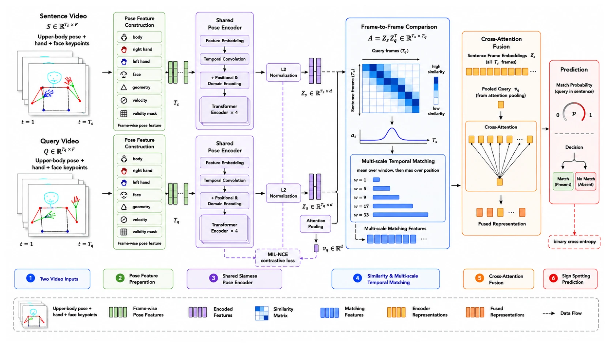

WSLP 2026WorkshopPublished
Multiple-Instance Contrastive Alignment for Pose-Based Sign Spotting
Md. Mosharaf Hossain Apurbo, Md. Asif Ali, Kazi Reyazul Hasan
Proceedings of the Second Workshop on Sign Language Processing (WSLP 2026), co-located with EMNLP 2026, Budapest, Hungary